![]()
| 項目 | 比率 | 到達目標 |
|---|---|---|
| リーディング・アサインメント | 30 | 4 |
| 授業の感想 | 30 | 1;2 |
| レポート（2種） | 30 | 1; 2; 3; 4; 5 |
| ディスカッション（受講態度を含む） | 10 | 1; 2 |
政治学概論Ⅱ ＃1 イントロダクション
国際政治学と比較政治学
2024年12月3日
自己紹介
自己紹介
氏名：苅谷千尋（かりやちひろ）
出身：岐阜県
所属：金沢大学
- 高大接続コア・センター
専門：政治学
- 政治思想史（イギリス）
- personal website - en
- researchmap - ja
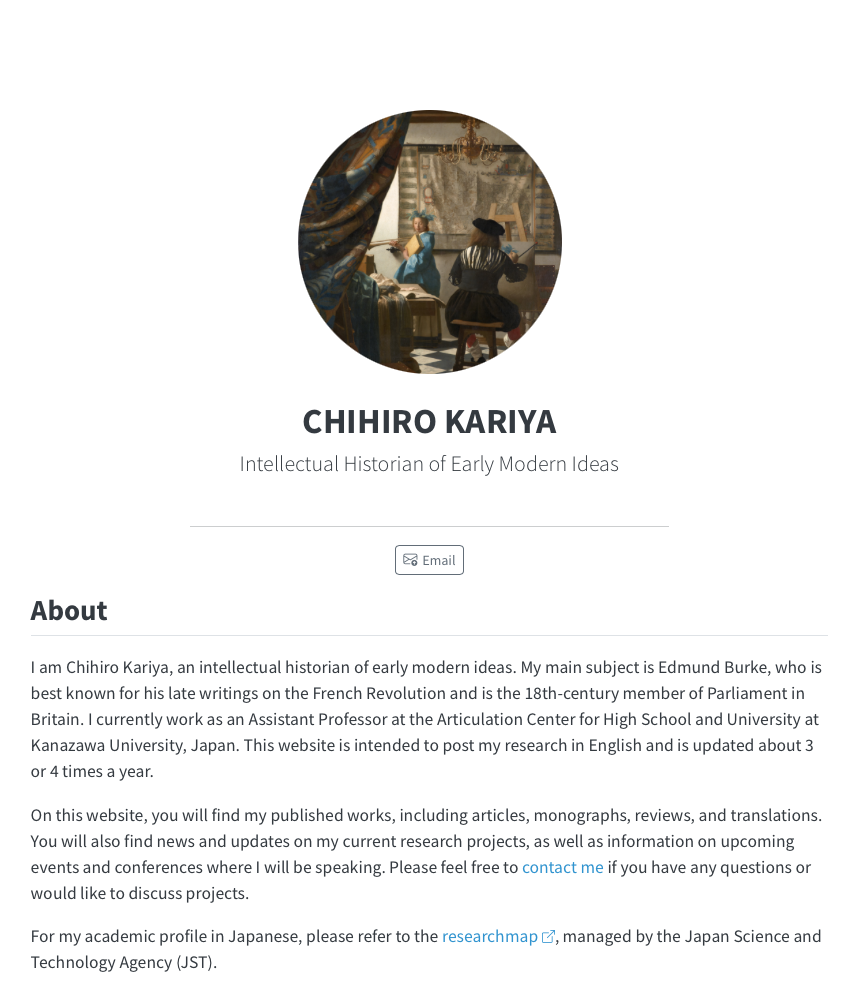
自己紹介 > 研究
研究テーマ
- 18世紀後期ブリテン思想
- エドマンド・バーク（庶民院議員）を中心に
- 18世紀後期ブリテンにおけるキケロ、タキトゥスの受容
- 議会におけるレトリック
- フランス革命期ブリテンにおける国際法解釈
- 国家・帝国・植民地
- 18世紀後期ブリテンにおけるキケロ、タキトゥスの受容
ポイント
- 市民革命論（神話）の見直し
- 後世ではなく、18世紀の評価基準による歴史の再構築
自己紹介 > 研究


自己紹介 > 研究
雄弁の伴わぬ知恵（sapientia）が共同体の役に立つことは無いが、逆に知恵の伴わぬ雄弁も害を与えること甚だしいだけで、決して何の役にも立たない（キケロ）
民衆が演説をどう受け止めるかに関心を持たない者は、すなわち寡頭制を支持する者、説得よりも暴力に頼ろうとする者である（プルタルコス）
今昔を比較して暇を潰す老人らは、つぎのことに気がついた。国家を統治した歴代の元首のうちで、他人の雄弁術を必要としたのは、ネロが最初であると（タキトゥス）
諸君、私が常に恐れているのは、この貴族議員の想像力が与える装飾のなかで、誤謬が真実であるかのように見えすぎてしまうことなのです。そしてまた、理性の光によって導かれる自分自身を想像しながらも、その詭弁が私の知性を惑わすことなのです（サミュエル・ジョンソン）
自己紹介 > 校務（高大接続）
リーディングセミナー
- 高校生向けに書かれた新書らを読みあう
- 最近の高校生は本を読まない？
- 高校生向けの良書の出版
- セミナーの模様
ボードゲームで学ぶ社会の平等と不平等
- フランスで作られた、社会格差を知るためのモノポリー
高大接続ラウンドテーブル
- 探究学習を題材に、高校生と大学生が交流

シラバス
シラバス > 授業の目的
本授業は、政治学に関する基礎的知識を学ぶことを目的としています。グローバル化が進む今日、日本を世界の中に位置づける視点、また他国の問題、グローバルな問題を理解することが重要です。また、日本政治の特徴を理解するための有効な手段の一つは、それを他国と比較することです。この授業では、このような意味での比較を通して政治に関わる基本概念の理解を通して、政治や政策を動かす仕組み・メカニズムについて説明します。
シラバス > 授業の到達目標
- 受講生が、国民主権、国民国家、主権国家体制、国際法、選挙制度、官僚制度を中心とした公民分野の基礎的知識を得て、それを初学者に対してわかりやすく説明することができる。
- 受講生が、比較政治という手法を用いて、政治の諸現象を初学者に対してわかりやすく説明することができる。
- 受講生が､政治学の諸概念について､自分なりの視点を加味した､関係図を作成することができる｡
- 受講生が、国際政治学、比較政治学ならびに公民分野に関わる基本的な資料、文献を読みこなすことができる。
- 受講生が、1及び2で得た知識を背景に、日々のニュース報道や新聞報道をより深く、また相対的に理解したうえで、自分自身の意見や解釈を、確かな根拠を明示しながら、明快に記述することができる。
シラバス > 授業の進め方
初回と第2回（2024年12月を予定）と第3回と第4回（2025年1月を予定）の授業はオンデマンド配信にて実施します｡それ以降の授業は対面で実施いたします（2025年2月4日から4日間）｡
授業はスライド資料を用いておこないます。受講生は、各単元に関連する指定文献を事前に読み、それについて要約や感想を書くことが求められます（リーディング・アサインメント（＝文献予習））。また､すべての回答は一覧表にして配布します。
また､Googleフォームを用いて、定期的に受講者の授業理解を確認します（授業の感想）。オンデマンド授業は毎回､対面授業の場合は､一日に1回とします。こちらも､すべての回答を一覧表にして配布します。
シラバス > 成績評価の方法およびその基準
- 授業には3分の2以上の出席を必要とします
- 評価基準は、授業の到達目標に準じます
- 普通に取り組めば80点以上とれるように、配点しています
- レポートはSかAを決めるために使っています（使いたいです）
- 以上のことは、レポート評価は厳し目（各レポート8点/15点満点を標準的なレポートとして評価し、それ以上、それ以下で点数をつけます）、その他は甘め目であることを含意します
- すべての授業終了後に実施する授業アンケートも「授業の感想」の一つとして扱い､評価の対象とします
- 出席点はありません
- 出席回数は足切りのためのみに使います
シラバス > 単位についての考え方
Note | 予習復習も単位取得に必要な時間です
- 授業出席時間だけでは、単位取得時間を満たしません
- 学修の観点だけでなく、大学制度上、予習復習は必須です
1単位＝45時間の学修の考え方（「大学設置基準」）
我が国の大学教育は単位制度を基本としており、1単位あたり45時間の学修を必要とする内容をもって構成することが標準とされています。ここでいう１単位あたりの学修時間は、授業時間内の学修時間だけではなく、その授業の事前の準備学修・事後の準備復習を合わせたものとなっています（文部科学省高等教育局 (日付なし)）
2単位14週間の授業の場合
- 90時間の学修を要し、うち1/3の30時間が授業時間
- 残りの60時間が授業外での学修時間となる
- 慣例的に概算計算される
シラバス > 教科書・参考書補足
教科書
- 使用しない
参考書
- 高坂正堯『国際政治：恐怖と希望』（中公新書）、2017年（初版1966年））
世界平和を実現するために人類は古くから叡智を傾けたが、戦いは繰り返された。戦争の危機はなぜ去らないのか――この問いに答える書物は少ない。国際関係を単純に図式化・理想化することなく、また「複雑怪奇」といって正確な認識を諦めることもなく追い求めた著者が、軍縮、経済交流、国際機構などを具体的に検討しながら、国家利益やイデオロギーがからみあう現実世界を分析し、組織的に論じた国際政治の入門書。
- 建林正彦・曽我謙悟・待鳥聡史『比較政治制度論』（有斐閣アルマ､2008年）
国により，政治的安定や腐敗などの政治的帰結，経済成長や財政赤字などの経済的帰結に，なぜ違いが生じるのか。制度を変えることで，何が変わるのだろうか。政治的・経済的帰結の違いを政治制度によって説明する新制度論の諸議論を整理し，紹介する。
シラバス > オフィスアワー等
学生からの質問への対応方法等
- 対面授業の期間中は､授業前後に質問､相談に応じます
- この期間以外に、質問・連絡が必要な場合は、社会科教育講座主任の諸岡先生に御連絡ください
スケジュール
スケジュール
| 回 | 日付 | コマ | 時間 | 開催形態 | タイトル | キーワード |
|---|---|---|---|---|---|---|
| 1 | 12-04 | - | - | オンデマンド | イントロダクション | 国際政治学と比較政治学 |
| 2 | 12-18 | - | - | オンデマンド | 国際政治学（1） | グローバルイシュー①難民問題；②公衆衛生 |
| 3 | 01-08 | - | - | オンデマンド | 国際政治学（2） | グローバルイシュー③主権と自治 |
| 4 | 01-22 | - | - | オンデマンド | 比較政治学（1） | ケース①ジェンダー；ケース②憲法 |
| 5 | 02-04 | 2 | 10:25-12:05 | 対面 | 国際政治学（3） | 現実主義；主権国家；主権国家体制；国際社会論 |
| 6 | 02-04 | 3 | 13:00-14:40 | 対面 | 国際政治学（4） | 勢力均衡と軍備縮小；英国学派とIR |
| 7 | 02-04 | 4 | 14:55-16:35 | 対面 | 国際政治学（5） | グローバルイシュー④ナディーン・ラバキー監督『存在のない子供たち』 |
| 8 | 02-05 | 2 | 10:25-12:05 | 対面 | 国際政治学（6） | 国際法；国際機構 |
| 9 | 02-05 | 3 | 13:00-14:40 | 対面 | 国際政治学（7） | 前半のまとめ／ディスカッション1 |
| 10 | 02-05 | 4 | 14:55-16:35 | 対面 | 比較政治学（2） | 比較政治学の方法と対象 |
| 11 | 02-06 | 2 | 10:25-12:05 | 対面 | 比較政治学（3） | 選挙制度；議会制度 |
| 12 | 02-06 | 3 | 13:00-14:40 | 対面 | 比較政治学（4） | 執政制度；官僚制度 |
| 13 | 02-07 | 2 | 10:25-12:05 | 対面 | 比較政治学（5） | 中央・地方関係制度 |
| 14 | 02-07 | 3 | 13:00-14:40 | 対面 | 比較政治学（6） | 後半のまとめ／ディスカッション2 |
- オンデマンドについては配信予定日です。若干､前後する可能性があります
- ディスカッション1（2月5日3限）は、国会中継の視聴と議論を予定しています
- ディスカッション2（2月7日3限）は、レポート課題2の発表と議論を予定しています
リーディングアサインメント
| 回 | 授業日 | 著者 | タイトル | 〆切 |
|---|---|---|---|---|
| 1 | 12-04 | - | - | - |
| 2 | 12-18 | 苅谷剛彦 | 「放置された不平等の慣性（イナーシャ）」 | 12-15 |
| 3 | 01-08 | 細谷雄一・遠藤乾 | 「対談 これはグローバリゼーションの反動なのか？」 | 01-05 |
| 4 | 01-22 | 前田健太郎 | 「日本政治の二つの見方」（『女性のいない民主主義』） | 01-19 |
| 5 | 02-04 | 高坂正尭 | 「現実への対処」（『国際政治』） | 01-30 |
| 6 | 02-04 | 多湖淳 | 「内戦に対する国際介入は効果があるか」「早く終わる内戦、長引く内戦」（『戦争とは何か』） | 01-30 |
| 7 | 02-04 | - | - | - |
| 8 | 02-05 | 最上敏樹 | 「奇妙な法」（『国際法以後』） | 01-30 |
| 9 | 02-05 | - | - | - |
| 10 | 02-05 | 加藤淳子 | 「書評『比較政治制度論』（建林正彦・曽我謙悟・待鳥聡史著）」 | 02-03 |
| 11 | 02-06 | 建林・曽我・待鳥 | 「議会制度の構成要素」（『比較政治制度論』） | 02-03 |
| 12 | 02-06 | 建林・曽我・待鳥 | 「官僚の自律性と能力」（『比較政治制度論』） | 02-03 |
| 13 | 02-07 | 建林・曽我・待鳥 | 「中央地方関係制度の3つの側面」（『比較政治制度論』） | 02-03 |
| 14 | 02-07 | - | - | - |
- 上記の指定文献は、著作権の都合上、Moodle上に置いておきます
- 提出先はGoogleフォームです
- 各回3点。2月13日23:59まで遅延提出を認めますが、得点は1点となります
レポート課題
レポート1. 芋づる式マップの作成 > 岩波書店の芋づる式マップ
- 「つながる ひろがる，芋づる式！ 岩波新書」
「あなたがつくる、読書案内」――ご好評をいただいた、岩波新書フェア連動企画「芋づる式！読書MAP」。自分でもMAPを作ってみたい、という声に応え、書名の入っていない白地図版を用意いたしました。……芋づる式につながるひろがる、あなたの読書の世界へ連れていってください！（岩波書店 (2019)）
レポート1. 芋づる式マップの作成
別紙「芋づる式読書！MAP」の四角い枠に、あなたが国際政治学または比較政治学（どちらかひとつを選択）にとって重要だと思う概念や制度、分析手法や観点を書き込んでください
- 5つの四角い枠のうち、3つは授業で得た概念・制度・知識・情報など、残り2つはこの授業以外で得た概念・制度・知識・情報（他の授業やニュースなど）を書いて下さい
- 四角い枠に関連する情報を、芋型の枠に書き込み、相互に関連する場合のみ、四角い枠、あるいは他の芋型の枠を線でつなげて下さい
- 線には、枠と枠の繋がりがわかるようなキーワードや言葉を添えて下さい
レポート1：芋づる式マップの作成 > 回答用紙
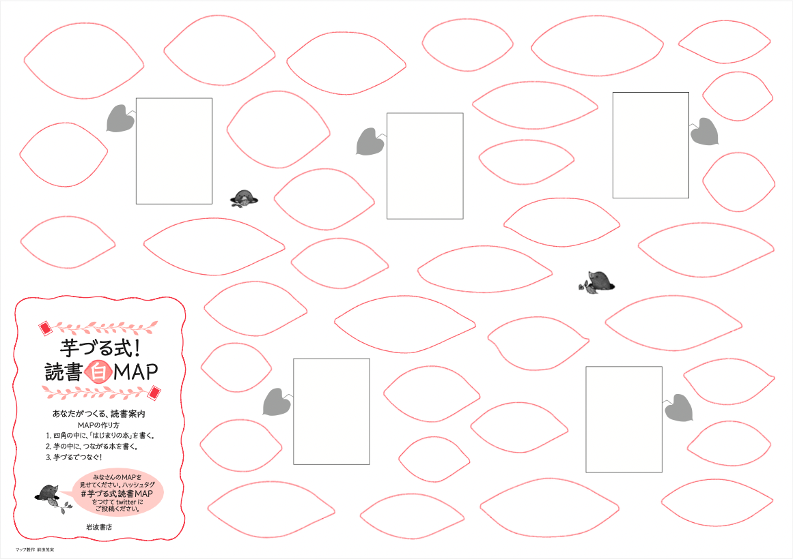
レポート1：芋づる式マップの作成 > イメージ
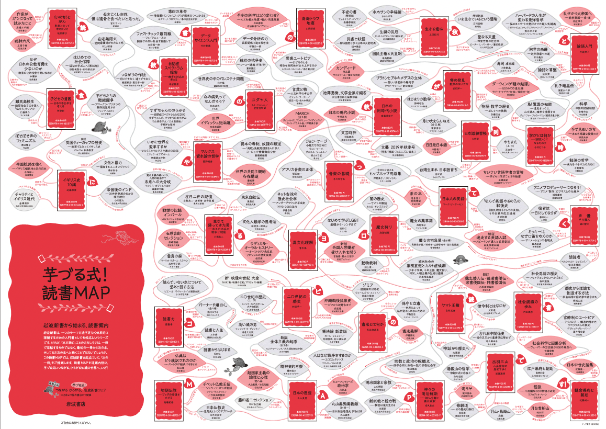
レポート1：芋づる式マップの作成
- Googoleフォームに、1で書き込んだ芋づる式！MAPを解説して下さい（500字程度）
- マップの意図
- 自分がこだわったポイント
- 芋づる式マップの余白に氏名を記載してください
- 芋づる式マップは、原紙ではなく、写真に撮ったファイルを送ってください
創意工夫
- 読みやすいように、色ペンを使ってみましょう
注意事項
- 独創性なく、レジュメを機械的に書き写しただけのは、まったく評価しないので、気をつけて下さい
- 用紙の8割は埋める努力をしましょう
レポート1：芋づる式マップの作成
Note | 摘出先と締め切り
- 回答先：Google Forms
- 締め切り：2025年2月13日（火）23時59分
- ファイル形式：jpeg/jpg（その他､一般的な形式のもの）
- ファイル名：氏名のよみがな_芋づる式マップ.jpg
注意 | ファイル名の遵守
- ファイル名の例：かりやちひろ_芋づる式マップ.jpg
- 提出物の確認洩れを防ぐため、ファイル名は必ず守ってください
レポート2：試験問題案の作成
この授業で得た知識、考えたことを活用して、公民（中学校）、公共（高校）、政治経済（高校）のいずれかを対象とする、政治学に関する試験問題を作成してください（選択した対象をどこかに明示すること）
- 選択式問題を交えても構いませんが、必ず一題は筆記問題とすること
- この筆記問題は知識を確認するものではなく、生徒が自分の力で考えることができているかどうかを評価できるものにしてください
- 試験問題には資料を用意し、それを読んで回答するという方式も可とします（資料を用いる場合は、添付（写真でもよい）もしくはURLを記載すること）
模範解答と予想される間違いを作成してください
出題意図とこだわったポイントを教えてください（500字程度）
体裁
- レポートの体裁は、タイトル、氏名、参考文献を含む、一般的なルールを守ってください
レポート2：試験問題案の作成
その他：ディスカッション2
- 2月8日（13:00-）に実施するディスカッション2は、レポート2の構想についてグループで話しあってもらいます
- この時点ではアイデア（メモがあればなおよい）出しで十分です
- レポートの〆切は2月13日（木）
レポート2：試験問題案の作成
Note | 摘出先と締め切り
- 回答先：Google Forms
- 締め切り：2024年2月13日（木）23時59分
- ファイル形式：doc/docx/pdf（その他､一般的な形式のもの）
- ファイル名：氏名のよみがな_試験問題案.docx
注意 | ファイル名の遵守
- ファイル名の例：かりやちひろ_試験問題案.docx
- ファイル名の例：かりやちひろ_試験問題_資料.pdf
- 提出物の確認洩れを防ぐため、ファイル名は必ず守ってください
受講生
受講生
専攻
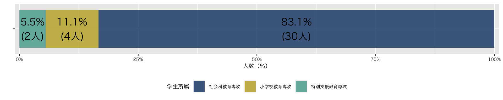
年次
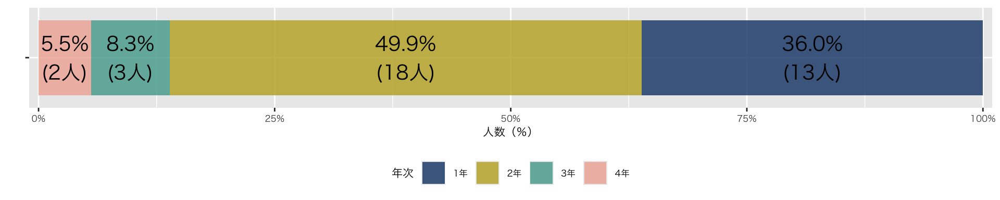
受講生
概論I(2023)に続いて概論II(2024)を受講する者
| 概論I（2023） | 概論II（2024） | 比率 |
|---|---|---|
| 14 | 36 | 38.9 |
- 政治学概論Iを踏まえた受講が望ましいと思うが、今年度から、概論IIも1年生から受講可能になるなどの、変更があった
- 政治学概論Iを受講していない者へも配慮して授業を進める
国際政治学
国際政治学 > 3つの研究領域
- 国家間関係
- 外交
- 17世紀ヨーロッパにおいて、制度、スタイルが大きく発展
- 例：日米関係、日韓関係、G7
- 外交
- 他国の国内政治（エリアスタディ）
- 比較の上で必要な基礎知識
- 例：アメリカ大統領選挙
- アメリカのような大国の国内政治は無視できない
- 渡辺将人「民主党左派とカマラ・ハリス：「擬似サンダース政権」継続圧力と予備選の洗礼なき指名の功罪）
- グローバルイシュー
- 国境を越える課題とそれへの対処
- 例：環境問題；公衆衛生問題
- 国境を越える課題とそれへの対処
国際政治学 > 国際政治の基本的特徴
基本的特徴（1と2）
- （物理的）強制力を背景とする主権の欠如
- 国際社会＝無政府社会論（自然社会論）
- 複雑な利害関係と普遍的な価値の不在
- 責任者と問題の当事者が錯綜
- 代表と世論という政治システムの欠如
- ➡ ただし、完全な弱肉強食の社会にはなっていない点に注意が必要
協調が生まれる背景
- 国際社会を律する制度や慣行（国際機構；国際法）
- 大国の責任論（自制論）
- 国家利益と国際社会の利益は必ずしも対立しない
- 国際世論（NPO；NGO；マスメディア）
日本ってどんな国
日本ってどんな国 > 出羽守と愛国者さま
「出羽守」と「尾張守」論法
- 「海外では（出羽）」「日本はもう終わり（尾張）だ」（河野有理 (2020)）
- 海外の評価基準の受け売り（海外の美化）
- 日本に対する低い評価
「SNSの愛国者さま」
- 政権（特に安倍政権）の絶対的擁護
- 自国の美談大好き（ゴミ拾う「美しい日本人」）
- 排外主義；陰謀論
ポイント
- どちらも比較軸、客観視に問題あり
- ステレオタイプ（判で押したような国民像）
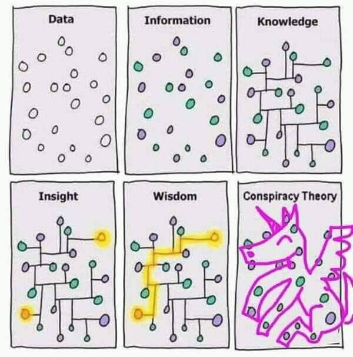
日本ってどんな国 > 研究者の視点とデータの可視化
アカデミズムを頼る
- 本田由紀『「日本」ってどんな国？：国際比較データで社会が見えてくる』 （ちくまプリマー新書､2021年）
- 比較政治学という研究アプローチ
- 比較政治制度論：制度効果（制度を原因とする政治の動態）の把握を、国家間レベルで比較することで特定
データを可視化する
- 人の作った図に頼らない（教科書や政府も含めて！）
- 信頼できるデータの探索＋可視化（R - ggplot)
- 世界価値観調査（World Values Survey）：公式サイト ；Wikipedia - ja
- 国民負担率
- 信頼できるデータの探索＋可視化（R - ggplot)
世界価値観調査 > 回答者（日本）の世帯収入
スマートフォンを使って、ポートレートモード（縦持ち）で見る場合、表示領域の関係で画像が表示されません。ランドスケープモード（横持ち）でご覧下さい（以下同じ）
Souce: WVS Wave 7 (2017-2022)
- 以下同じ
日本ってどんな国 > 世界価値観調査 > 人生は自分の思い通りになるか
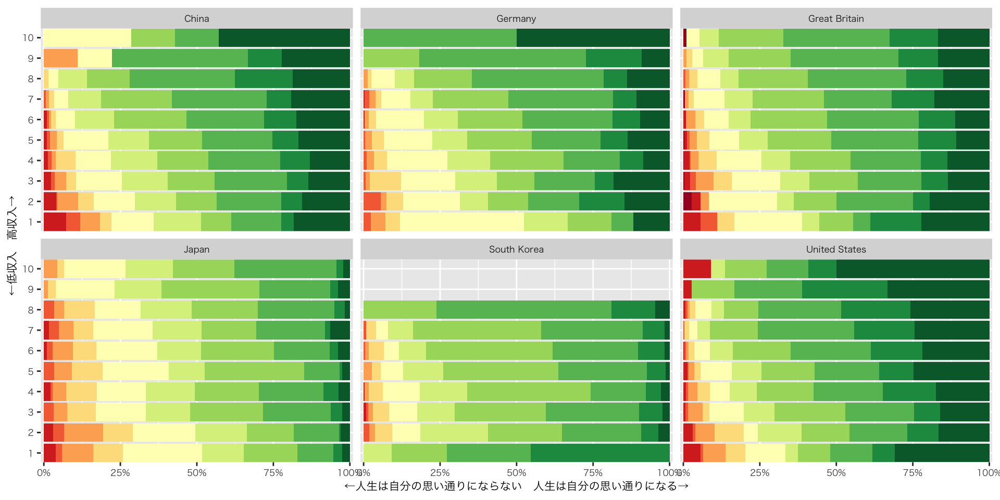日本
- 高収入だからといって、人生が思い通りになるとは思わない人が多い
- 他国と比較して、全体に、人生は思い通りにならないと思っている人が多い
日本ってどんな国 > 世界価値観調査 > 競争か平等か
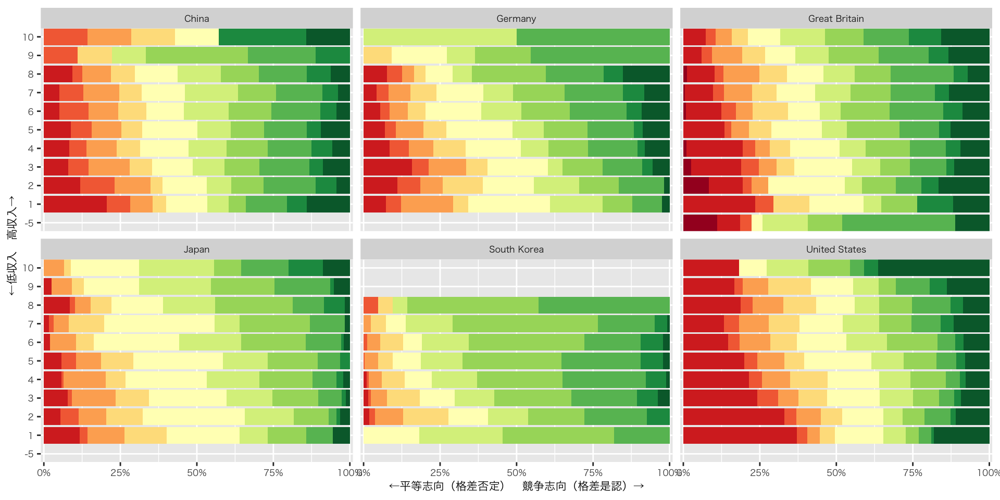日本
- 全体に平等志向が少ない
- 所得と価値（平等志向、競争志向）に関係性が見られない
日本ってどんな国 > 世界価値観調査 > 小さな政府志向
- 小さな政府志向＝収入再分配機能の否定
日本
- 小さな政府を強く求める者は少ない
日本ってどんな国 > 世界価値観調査 > 大きな政府志向
- 大きな政府志向＝所得再分配機能の肯定
日本
- 大きな政府を強く求める者は、各国比較のなかで真ん中ぐらい
日本ってどんな国 > 世界価値観調査 > 政府の所得再分配機能
Q. 政府が富裕層に課税し、貧困層に補助金を支給することは
- 10件法で質問
- ①民主主義の本質的な特徴ではない（赤色）
- ⑩民主主義の本質的な特徴である（緑色）
ここから先は自分で傾向を読み取ってみよう
日本ってどんな国 > 世界価値観調査 > 政治に関心あり
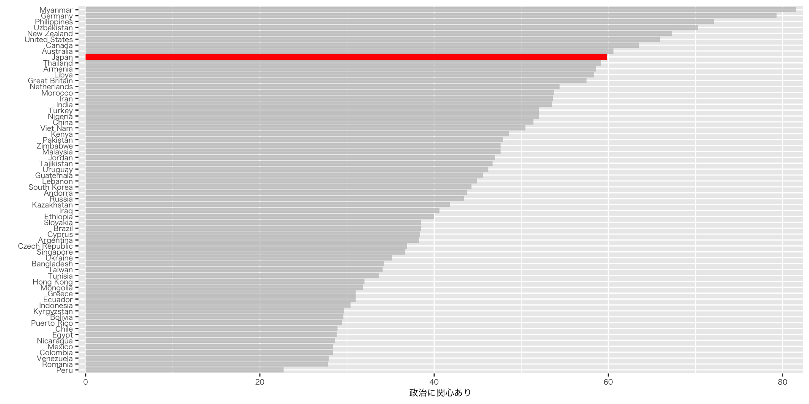日本ってどんな国 > 世界価値観調査 > 政治に関心なし
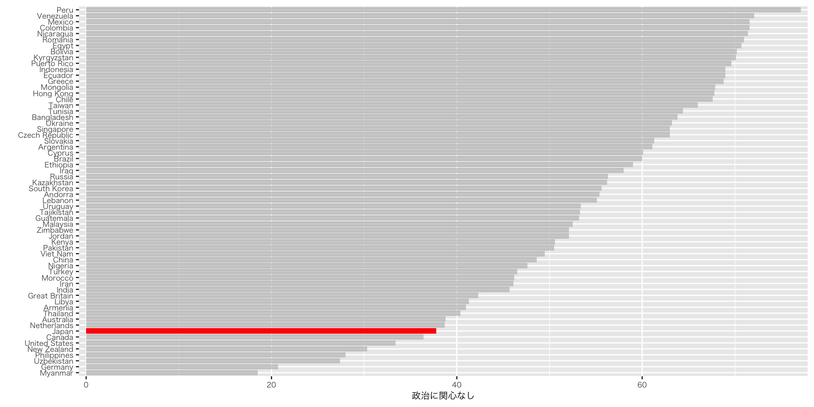日本ってどんな国 > 世界価値観調査 > 政治的関心の有無
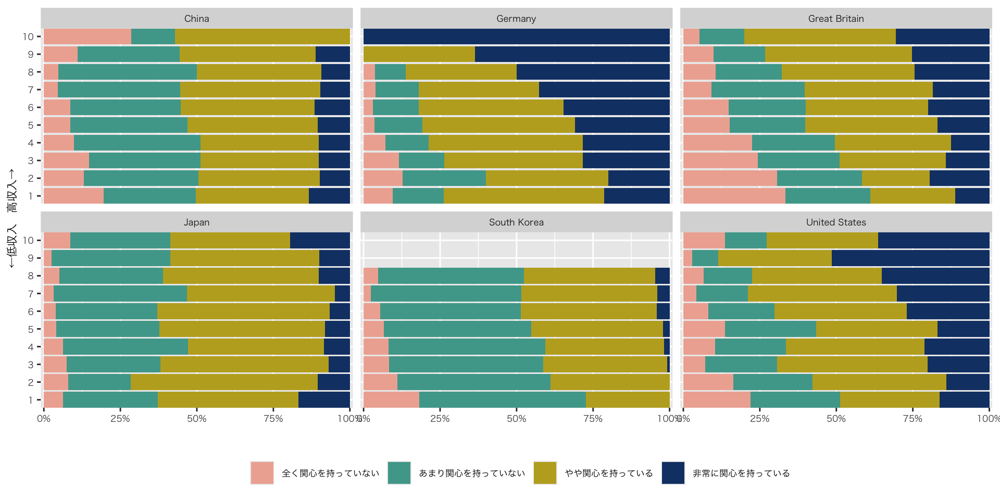日本ってどんな国 > 世界価値観調査 > 政治について話す機会
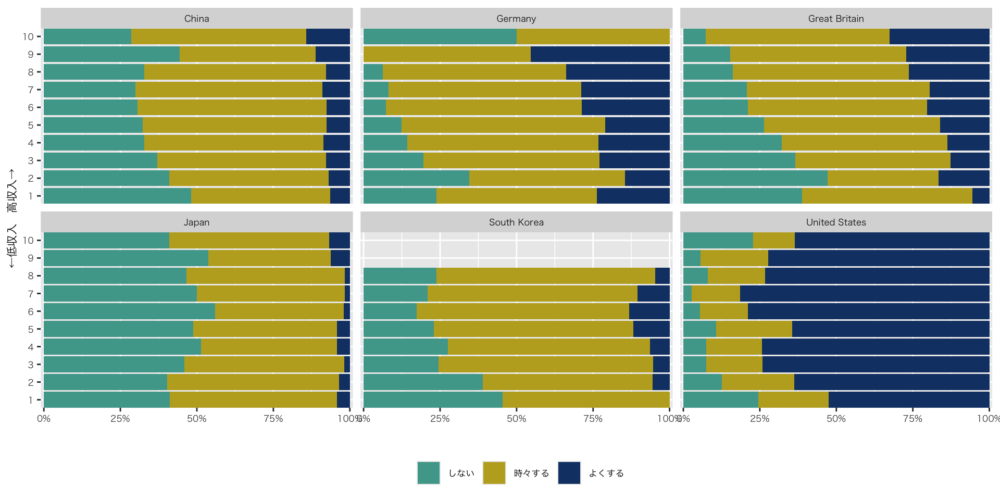日本ってどんな国 > 国民負担率
租税負担率

日本ってどんな国 > 国民負担率
社会保障負担率
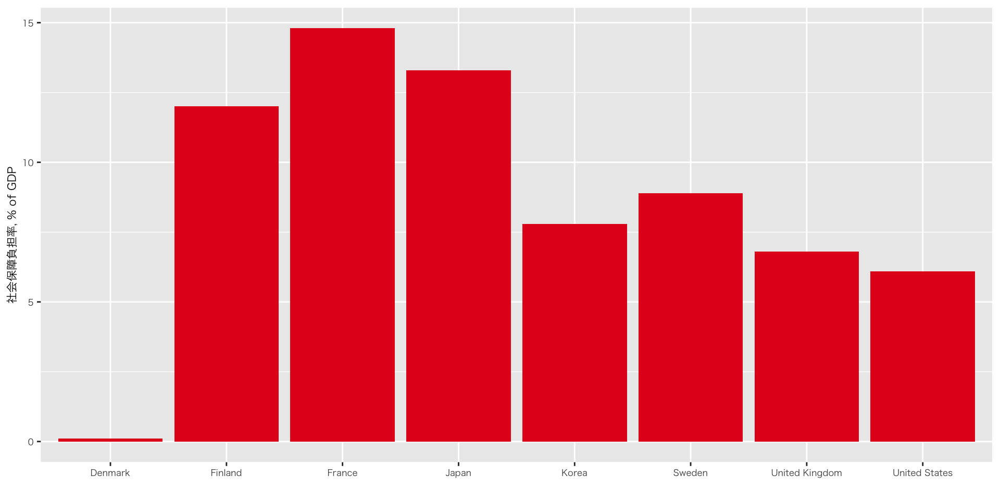日本ってどんな国 > 国民負担率
国民負担率（租税負担率 + 社会保障負担率）
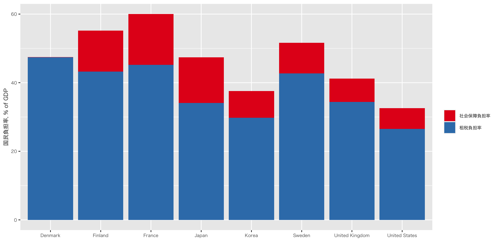- SOUCE: OECD: Global Revenue Statistics Database（上記から算出）
日本ってどんな国 > 国民負担率
国民負担率（租税負担率 + 社会保障負担率）
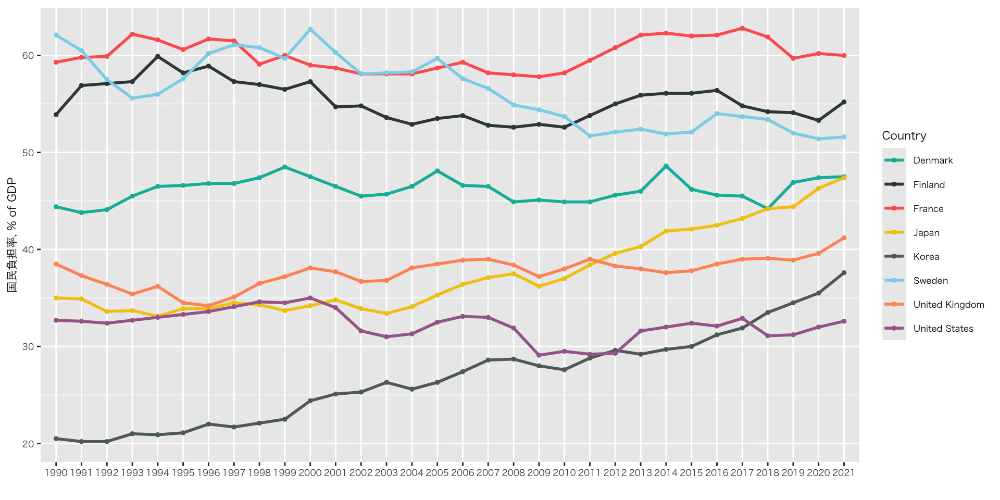- SOUCE: OECD: Global Revenue Statistics Database（上記から算出）
参考文献
引用文献
岩波書店 (2019) 「岩波新書フェア2019「つながる ひろがる，芋づる式！ 岩波新書」」. Available at: https://www.iwanami.co.jp/news/n32672.html.
文部科学省高等教育局 「大学における教育内容・方法の改善等について」. Available at: https://www.mext.go.jp/a_menu/koutou/daigaku/04052801/003.htm.
河野有理 (2020) 「「不思議の勝ち」を抱きしめて」. 『Voice』, No.6月, pp.86–93.